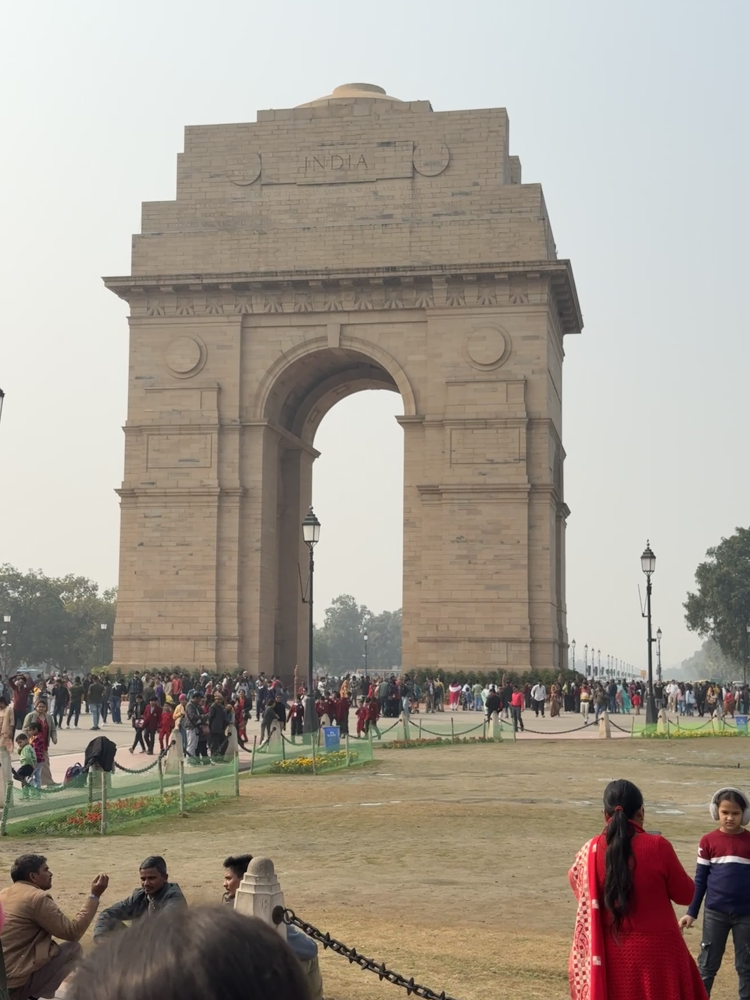
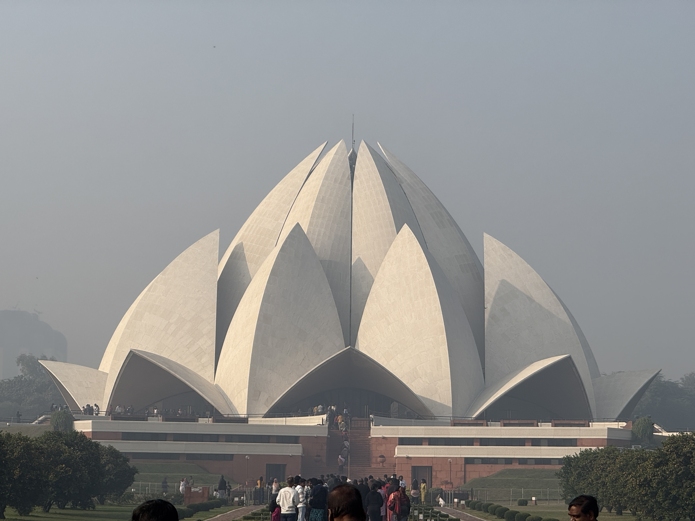
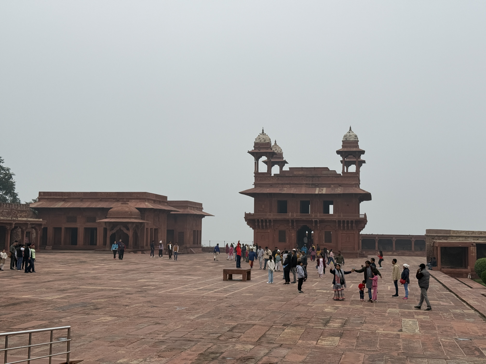
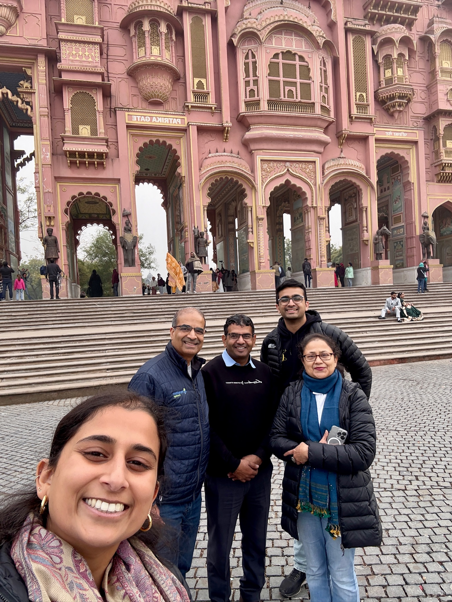

What I'm up to in 2025!
India!!
Over winter break, my family and I went to India to not only visit family but also explore some of the cities in the north, specifically Delhi, Agra, and Jaipur. This was the first time that my sister, Mallika, and I had gone there so we were both really excited to not only see the sites, but also learn about the history. In Delhi, we saw old Delhi, India Gate, Qutub Minar, and the Lotus Temple. As my mom used to live in Delhi when she was younger, we got to see all of her schools, my grandfather's medical institute, and meet some of my mom's old friends. We then drove to Agra, where we first saw Agra Fort and Itmad-Ud-Duala. Early in the morning the next day, we saw the iconic Taj Mahal. We then drove to Jaipur, but on the way, we stopped at Fatehpur Sikri and Chand Baori, India's largest stepwell of about 13 stories. Upon arriving in Jaipur, we saw Hawa Mahal, the wind palace, and then Amber Fort. It was an incredible trip and it was really cool to learn so much about the ancient history of India for pretty much the first time. We never really learned about India in school, but given that it plays such a big part in who I am, it was long overdue. Arguably my family's favorite part of the trip wasn't any of the sites, but our driver, Deshraj, who drove us for the entirity of the trip. He was such a kind, knowledgeable, and helpful person and if we ever go back, we will certainly try to meet him again.

Mallika and my dad in a cycle rickshaw in Delhi!

My mom and I in a cycle rickshaw (also in Delhi)!

India Gate!
India Gate!

Qutub Minar!

Lotus Temple!
Lotus Temple!

Agra Fort!

Itmad-Ud-Daula!

Inside Itmad-Ud-Daula!

Tah Mahal!

Fatehpur Sikri!
Fatehpur Sikri!

Chand Baori!

Hawa Mahal!

Amber Fort!

The courtyard inside Amber Fort!

A family picture with Deshraj, our driver, who is in the middle!
❮
❯
A family picture with Deshraj, our driver, who is in the middle!